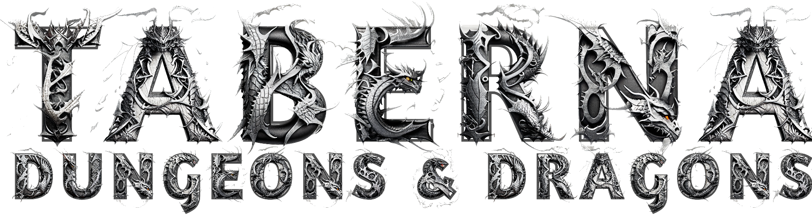
¡Ah, viajero! Has llegado al lugar donde las historias cobran vida y las leyendas se forjan. Aquí, entre el crepitar del fuego y el clamor de risas, encontrarás un refugio cálido de las aventuras que aguardan en el exterior. Si buscas compañía, ¡las jarras están siempre llenas! Si anhelas un buen banquete, nuestro cocinero prepara manjares dignos de héroes. Y si el destino te llama, escucha atentamente las historias que fluyen como el vino, porque en esta taberna, cada copa es un nuevo comienzo. Siéntate, relájate y deja que el Dragón Ruidoso te envuelva en su magia. ¡Salud y buena suerte en tus travesías, amigo!
Taberna Dungeons & Dragons (D&D) es un lugar para que los viajeros descansen, puedan compartir experiencias y reclutar a otros aventureros.
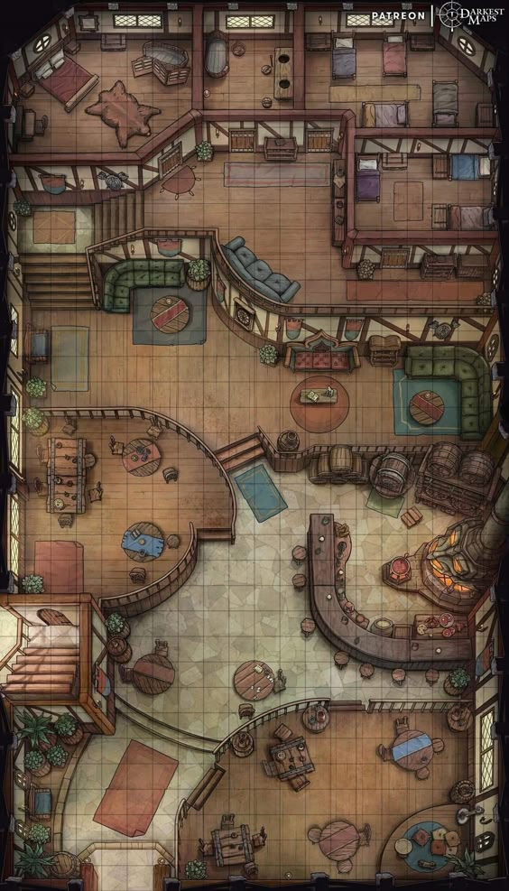
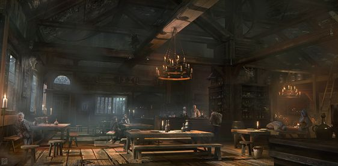
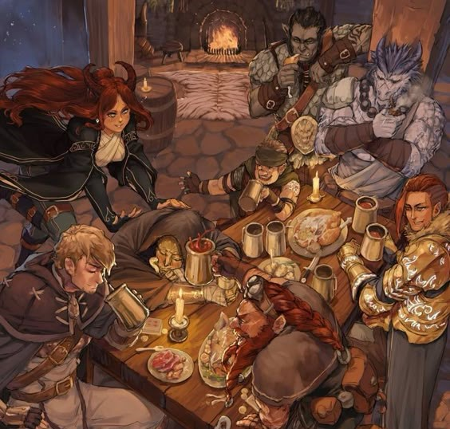
Las reglas de la Taverna D&D son simples pero importantes, pero aquí te damos un resumen básico:
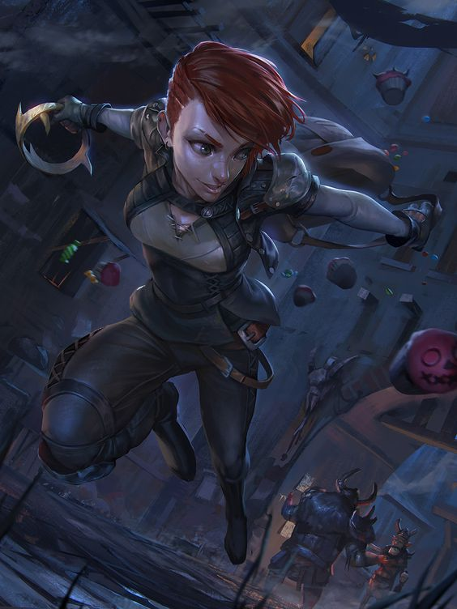
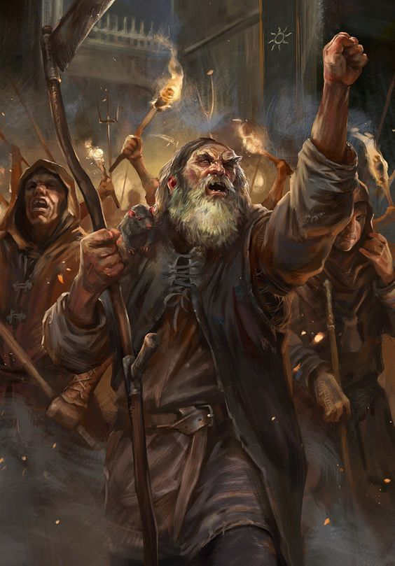
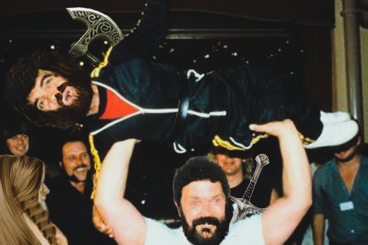
Los luchadores dominan muchos campos de batalla. Caballeros en misiones, campeones reales, soldados de élite y mercenarios curtidos.
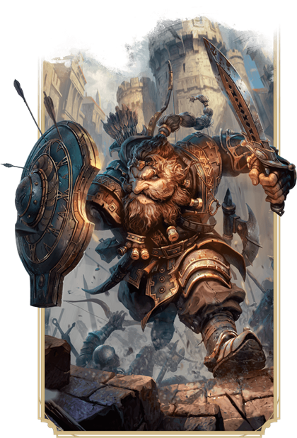
Lejos de las bulliciosas ciudades, entre los árboles de los bosques sin senderos y a través de amplias llanuras, los cazadores mantienen su vigilancia interminable en la naturaleza.
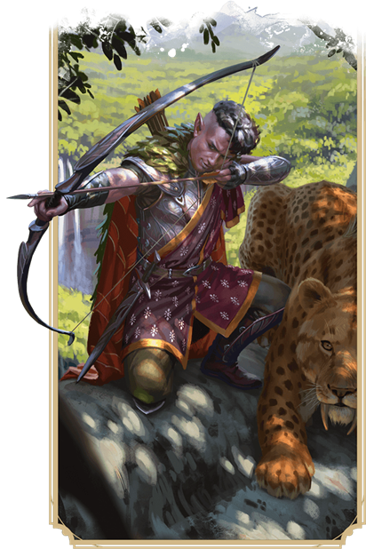
Los magos se definen por su estudio exhaustivo del funcionamiento interno de la magia. Lanzan hechizos de fuego explosivo, relámpagos arqueados, engaños sutiles y transformaciones espectaculares.
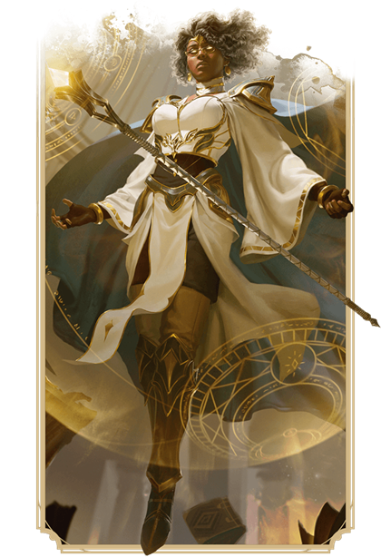
Los clérigos extraen el poder de los reinos de los dioses y lo aprovechan para hacer milagros. Un clérigo puede recurrir a la magia divina de los Planos Exteriores, donde habitan los dioses.
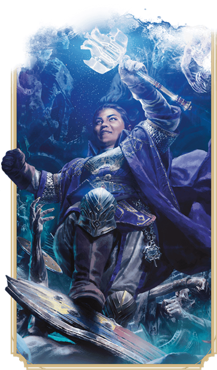
Los druidas pertenecen a órdenes ancestrales que invocan a las fuerzas de la naturaleza. Aprovechando la magia de los animales, las plantas y los cuatro elementos.
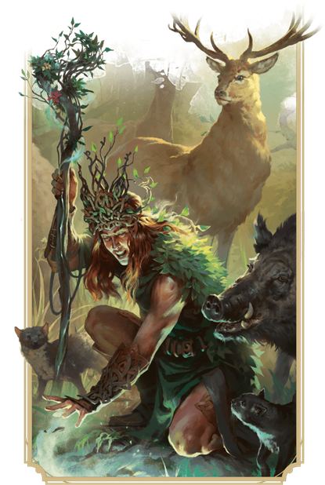
Los pícaros confían en la astucia, el sigilo y las vulnerabilidades de sus enemigos para obtener la ventaja en cualquier situación.
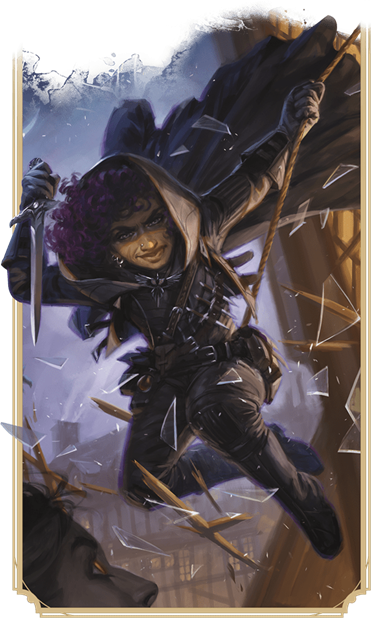
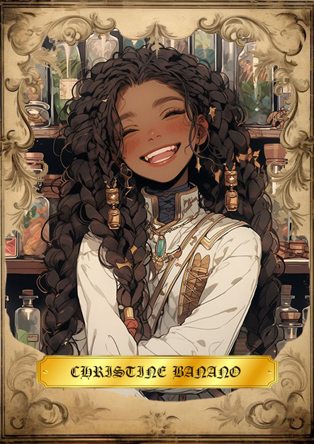
Aquí tienes algunos recursos útiles para seguir tu aventura:
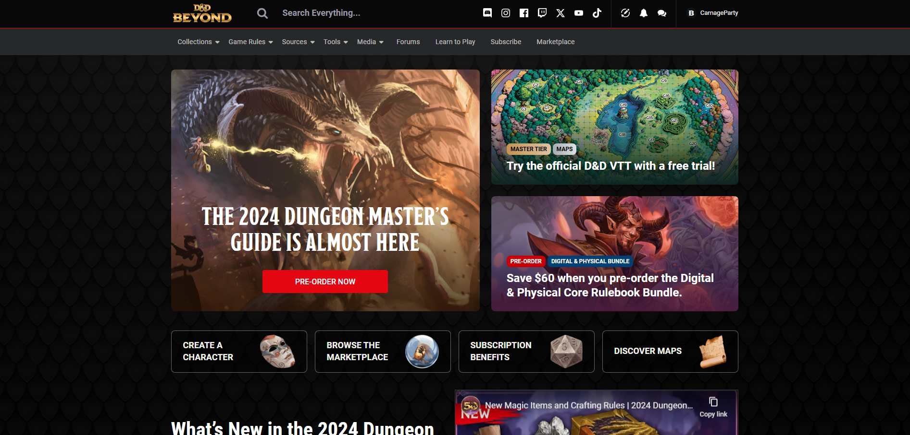
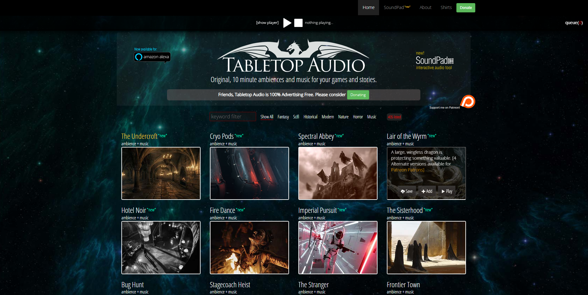
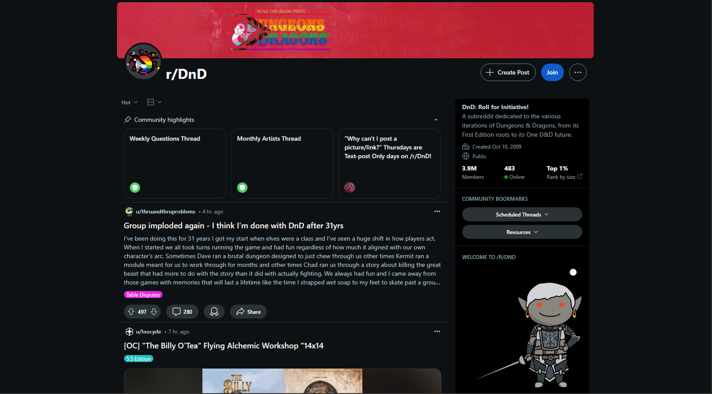